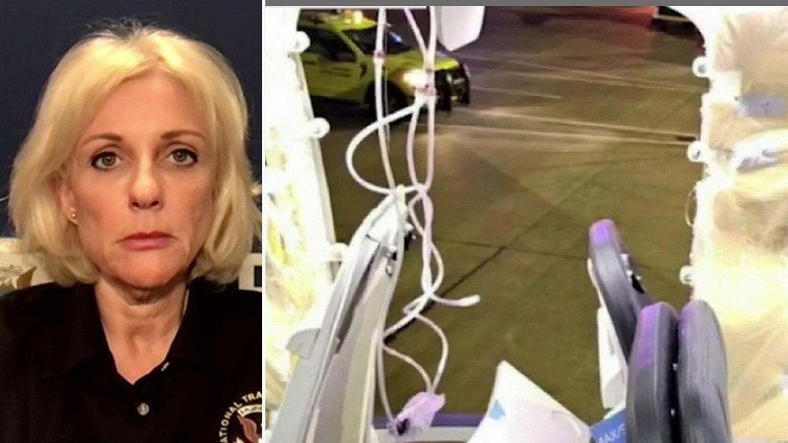

Alaska Airlines blowout could have been 'much different' scenario, NTSB chair warnsThe National Transportation Safety Board (NTSB) entertained a potentially disastrous "what-if" scenario days after an Alaska Airlines Boeing 737 MAX 9 experienced a terrifying mid-air door plug blowout. "If we think about a cruise altitude of about 30,000 or 35,000 feet, what is happening at that time? Flight attendants are providing service to the passengers. Passengers are up and moving. People are out of their seat belts. People are in lavatories. That would have been a much different scenario," NTSB Chairman Jennifer Homendy told Fox News' Neil Cavuto on Monday. "The pressure differential from outside the airplane to inside the airplane is much greater at that altitude. It would have been significant." Friday's incident saw the plug door panel fly off the California-bound aircraft at approximately 16,000 feet as it climbed to cruising altitude after departing from Portland, Oregon. With the cabin depressurized, the flight returned to Portland with no serious injuries reported onboard. Government agencies have since worked to investigate potential hazards that could affect flights from Alaska Airlines and United Airlines, the two U.S. air carriers that use the 737 MAX 9 and ordered the aircraft to be grounded for an investigation led by the Federal Aviation Administration (FAA) and National Transportation Safety Board. "Our team right now is evaluating the right door plug and surrounding structure on the airplane that is intact. That's opposite of the left one that blew out during the explosive decompression event, and that is still intact. They are looking at that and all the components," Homendy said. "Thankfully, we have the door plug itself," she continued, referencing a Portland teacher who discovered the plane piece in her backyard. Cavuto asked if the investigation has yielded any early reads on the structure. "We are still looking at all the components and documenting what we would like to remove from the door plug's surrounding structure that is on the airplane, and we're going to remove a lot of the fittings and other components around this surrounding structure and take those back to our lab," Homendy replied. "We're going to really have to take a closer look under our microscopes and evaluate each of those components to really figure out what went wrong here." Homendy reassured Americans that, despite the development, aviation is still an incredibly safe travel method and added that the most dangerous part of your trip will most likely be to and from the airport in a car. "We're incredibly safe. With that said, we have a responsibility to look closely and take our time to figure out what occurred when these events do happen to ensure safety in our airspace," she said. Meantime, United Airlines announced Monday that it found loose bolts on its Boeing 737 MAX 9 planes, days after an Alaska Airlines plane of the same model lost a door plug mid-air. In a statement obtained by FOX Business, United explained that its Boeing 737 MAX 9 aircraft will be suspended. The airline's 200 MAX 9 flights are also canceled. |
 |